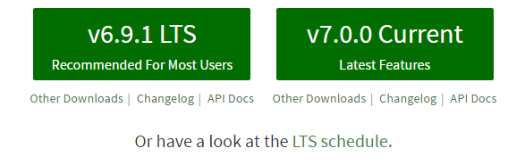
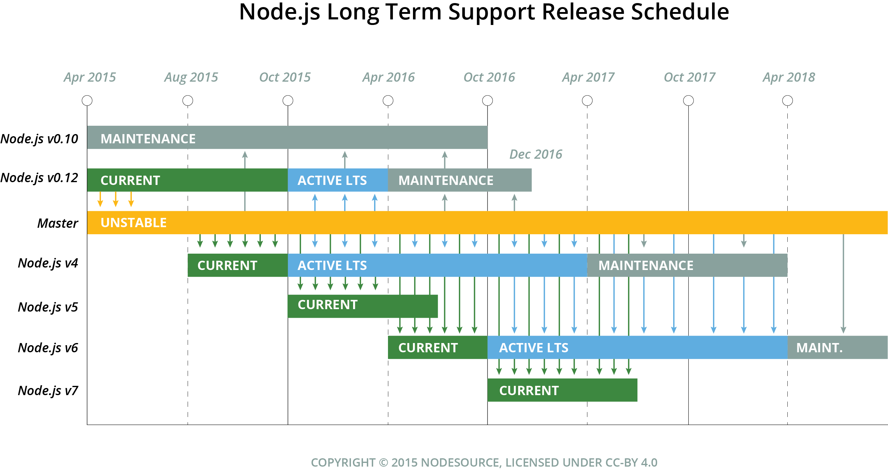
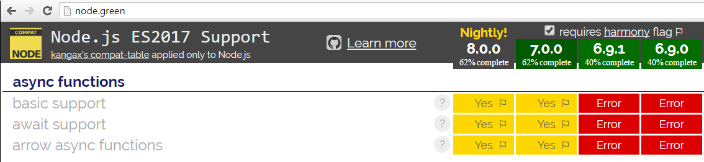
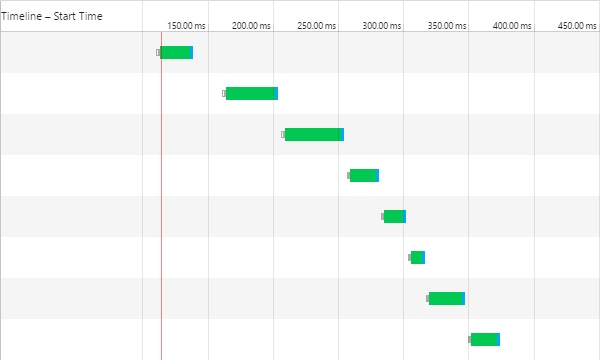
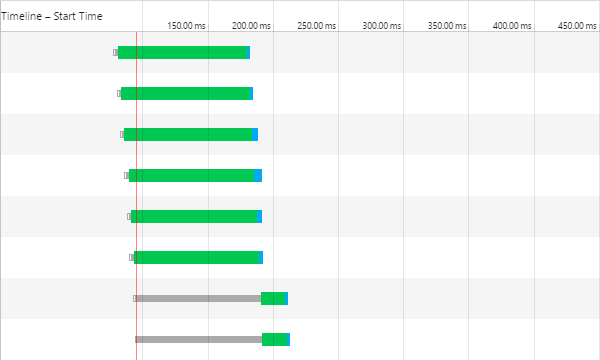

Async in 2017 made easy

André Werlang (@awerlang)
Node.js
source: https://nodejs.org/en/
LTS schedule
Node.js ES2017 support
source: http://node.green/
Node.js ES2017 support
To clarify, async/await is not yet finished. I'm working on fixing bugs and writing tests. If 53 branched today, we would not turn on the async/await flag on. I would not recommend using experimental features in production--they are often behind flags because they are not working 100% correctly. -- @littledan
TC-39
- Accepted into ECMAScript 2017
- Async functions - Draft
promises - the old new way
function chainAnimationsPromise(elem, animations) {
let ret = null;
let p = currentPromise;
for(const anim of animations) {
p = p.then(function(val) {
ret = val;
return anim(elem);
})
}
return p.catch(function(e) {
/* ignore and keep going */
}).then(function() {
return ret;
});
}
*deprecated, in JavaScript standards
(just kidding)
enters async functions
async function chainAnimationsAsync(elem, animations) {
let ret = null;
try {
for(const anim of animations) {
ret = await anim(elem);
}
} catch(e) { /* ignore and keep going */ }
return ret;
}
serialization
async function downloadAll(urls) {
const list = [];
for (const url of urls) {
const ret = await fetch(url);
list.push(ret);
}
return list;
}
chart
concurrency
async function downloadAll(urls) {
const list = [];
for (const url of urls) {
const ret = fetch(url);
list.push(ret);
}
return await Promise.all(list);
}
concurrency (2)
async function downloadAll(urls) {
return await Promise.all(urls.map(url => fetch(url)));
}
chart
express routes
app.get('/', (req, res) => {
service.get(req)
.then(data => {
res.send(data)
})
.catch(() => {
res.send(500, 'Oops...')
})
})
express routes with async
app.get('/', async (req, res) => {
try {
const data = await service.get(req)
res.send(data)
} catch (e) {
res.send(500, 'Oops...')
}
})
express routes with async (2)
app.get('/', async (req, res) => {
const data = await service.get(req)
res.send(data)
})
express wrap() helper
function wrap(fn) {
return (req, res, next) => {
const maybe_promise = fn(req, res, next);
if (maybe_promise && typeof maybe_promise.catch === 'function') {
maybe_promise.catch(next);
}
};
}
app.get('/', wrap(async (req, res) => {
const data = await service.get(req)
res.send(data)
}))
express monkey patch
I'm not always monkeypatching. But when i do it's Promise support for express.
-- @garkin
express monkey patch (2)
var Layer = require("express/lib/router/layer");
Layer.prototype.handle_request = function handle(req, res, next) {
var fn = this.handle;
if (fn.length > 3) return next();
try {
var maybe_promise = fn(req, res, next);
if (maybe_promise && typeof maybe_promise.catch === "function") {
maybe_promise.catch(next);
}
} catch (err) {
next(err);
}
};
source: https://gist.github.com/garkin/39e55d74c486cd75141d3d6721091cb2
express middlewares
- Beware async functions ain't supported in middlewares
other considerations
- interoperability
- exception handling
node v7
node --harmony-async-awaitbabel setup
Node >= v6
npm install --save-dev babel-preset-es2017.babelrc:
{
"presets": [
"es2017"
]
}
try: babel repl
babel setup (2)
Alternatively:
npm install --save-dev babel-plugin-transform-async-to-generator.babelrc:
{
"plugins": [
"transform-async-to-generator"
]
}
TypeScript
- TypeScript 1.7: targets ES6
- typescript@next: targets both ES5 and ES3
async function downloadAll(urls: string[]): Promise<any[]> {
return await Promise.all(urls.map(url => fetch(url)));
}
references
- https://tc39.github.io/ecmascript-asyncawait/
- https://github.com/expressjs/express/pull/2809
- https://strongloop.com/strongblog/async-error-handling-expressjs-es7-promises-generators/
- https://blog.risingstack.com/async-await-node-js-7-nightly/